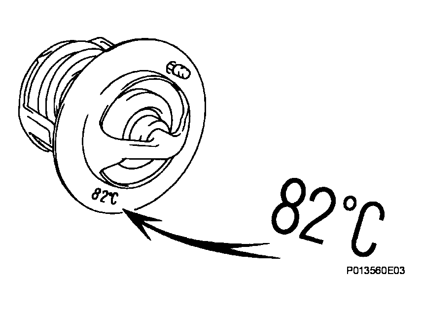
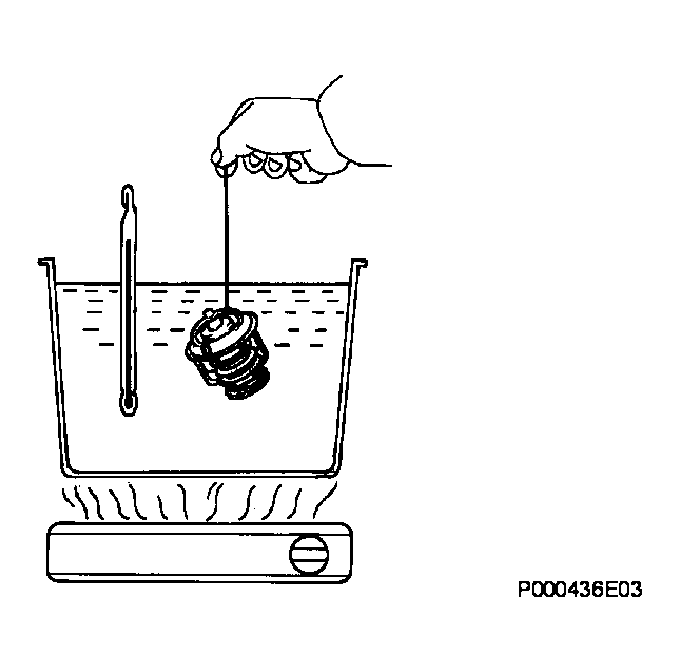

Cooling (1NZ-FE): Thermostat: Inspection
- INSPECT THERMOSTAT
HINT:
The valve opening temperature is inscribed on the thermostat.

Courtesy of © TOYOTA, LICENSE AGREEMENT TMS1002- Immerse the thermostat in the water and then gradually heat the water.
- Check the valve opening temperature of the thermostat.

Courtesy of © TOYOTA, LICENSE AGREEMENT TMS1002Standard valve opening temperature: 80 to 84°C (176 to 183°F)
If the valve opening temperature is not as specified, replace the thermostat.
- Check the valve lift.
Standard valve lift: 8.5 mm (0.33 in.) or more at 95°C (203°F)
If the valve lift is not as specified, replace the thermostat.
- Check that the valve is fully closed when the thermostat temperature is below 77°C (171°F).
If not fully closed, replace the thermostat.